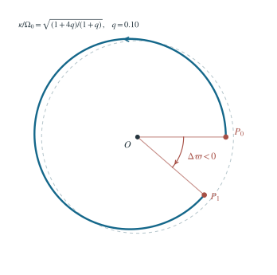

3.1 分别求恒星和尘埃产生的径向加速度
在半径 r 的球面内，均匀尘埃的包围质量为 Md(r)=4πρr3/3。球壳定理说明球面外尘埃对行星的合引力为零。因此向内的总加速度为
ar(r)=−r2GM−αr,α:=34πGρ. （1）尘埃引力虽然来自体积分布，在均匀区域内恰好线性正比于 r；恒星引力则按 r−2 衰减。
3.2 求原圆轨道的方位角频率
设原圆轨道的方位角速度为 Ω0。把第（1）式的加速度大小等于 r0Ω02，得
Ω02=r03GM+α,h:=mL=r02Ω0. （2）其中 h 为单位质量角动量。中心力不产生力矩，所以扰动后 h 保持第（2）式所给的数值。
3.3 固定角动量，线性化径向方程
极坐标径向方程中，角动量项对应的向外加速度为 h2/r3。因此
r¨=r3h2−r2GM−αr=:f(r). （3）令 r=r0+ξ，∣ξ∣≪r0。第（2）式使 f(r0)=0。求导并代回 h2=r04Ω02，可得
f′(r0)=−r043h2+r032GM−α=−r03GM−4α. （4）故一阶径向方程及其频率为
ξ¨+κ2ξ=0,κ2=r03GM+4α=Ω02+4πGρ. （5）对于任意 ρ≥0，κ2>0，故原圆轨道对足够小的径向扰动是线性稳定的。若扰动振幅与相位为 A,δ，则
r(t)=r0+Acos(κt+δ)+O(A2/r0),Tr=κ2π. （6）3.4 由两频率的差判定拱线进动
由角动量守恒，ϕ˙=h/r2=Ω0(1+ξ/r0)−2。使用 (1+u)−2=1−2u+O(u2) 并代入 ξ=Acos(κt+δ)，得到 ϕ˙=Ω0−2Ω0Acos(κt+δ)/r0+O(A2/r02)。余弦项积分为 sin(κt+δ)/κ，故方位角为下式，其中 ϕ0 是积分常数；若另指定 ϕ(0)，应令 ϕ0=ϕ(0)+2Ω0Asinδ/(κr0)。
ϕ(t)=ϕ0+Ω0t−κr02Ω0Asin(κt+δ)+O(A2/r02). （7）相邻两次径向极小相隔 Tr，正弦修正项在这两个时刻相同。因此相邻近心点的方位角差为
Δϕ=Ω0Tr=2πκΩ0=2πGM/r03+4αGM/r03+α. （8）只要 ρ>0，便有 κ>Ω0，于是 Δϕ<2π：近心点相对公转方向逐次后退，轨道形成近圆玫瑰线。每个径向周期的有符号进动角为
Δϖ=Δϕ−2π=2π(κΩ0−1)<0. （9）令 ρ→0，则 α→0、κ→Ω0、Δϖ→0，恢复无尘埃时的近圆开普勒椭圆。

为使差角可见，图中取 α/(GM/r03)=0.10、A/r0=0.08，按一阶式 r/r0=1−(A/r0)cos[(κ/Ω0)ϕ] 绘制。数值只用于示意；第（8）、（9）式不依赖这一取值。